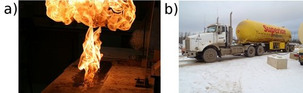
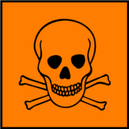

The way in which a compound will react is determined by a particular characteristic of a group of atoms and the way they are bonded (e.g. double CC bond, COH group). This is called the functional group. This group is important in determining how a compound will react. The same functional group will undergo the same or similar chemical reaction(s) regardless of the size of the molecule it is a part of. Molecules can have more than one functional group.
Functional group
In organic chemistry a functional group is a specific group of atoms (and the bonds between them) that are responsible for the characteristic chemical reactions of those molecules.
In one group of organic compounds, called the hydrocarbons, the single, double and triple bonds between carbon atoms give rise to the alkanes, alkenes and alkynes, respectively. The carbon-carbon bonds are examples of functional groups. Another functional group, the alcohols, contains an oxygen and a hydrogen atom bonded to each other to form the functional group (in other words an alcohol has an in it). All alcohols will contain an oxygen and a hydrogen atom bonded together in some part of the molecule.
Table tab-organic-summary summarises some of the common functional groups. We will look at these in more detail later in this chapter.
There are some important points to note as we discuss functional groups:
The beginning of a compound name (prefix) comes from the number of carbons in the longest chain:
meth-
carbon
eth-
carbon
prop-
carbon
but-
carbon
The end of a compound name (suffix) comes from the functional group, e.g. an alkane has the suffix -ane. Refer to the examples in Table tab-organic-summary.
For more information on naming organic molecules see Section 4.3.
Saturated and unsaturated structures
Hydrocarbons that contain only single bonds are called saturated hydrocarbons because each carbon atom is bonded to as many hydrogen atoms as possible. Figure fig-organic-saturated shows a molecule of ethane, which is a saturated hydrocarbon.
A saturated compound has no double or triple bonds (i.e. they have single bonds only). All carbon atoms are bonded to four other atoms.
Unsaturated compounds
An unsaturated compound contains double or triple bonds. A carbon may therefore be bonded to only two or three other atoms.
Hydrocarbons that contain double or triple bonds are called unsaturated hydrocarbons because they don't contain as many hydrogen atoms as possible.
Figure fig-organic-unsaturated shows molecules of ethene and ethyne which are unsaturated hydrocarbons. If you compare the number of carbon and hydrogen atoms in a molecule of ethane and a molecule of ethene, you will see that the number of hydrogen atoms in ethene is less than the number of hydrogen atoms in ethane despite the fact that they both contain two carbon atoms. In order for an unsaturated hydrocarbon compound to become saturated, a double (or triple) bond has to be broken, and additional hydrogen atoms added.
Let us first look at a group of organic compounds known as the hydrocarbons.
Hydrocarbon
An organic molecule which contains only carbon and hydrogen atoms with no other functional groups besides single, double or triple carbon-carbon bonds.
An aliphatic compound is one that does not contain an aromatic ring:
The simplest aromatic compound is benzene. There are aliphatic cyclic compounds, but if a compound contains an aromatic ring it is an aromatic compound, not an aliphatic one.
The hydrocarbons that we are going to look at are called aliphatic compounds. The aliphatic compounds are divided into acyclic compounds (chain structures) and cyclic compounds (ring structures). The chain structures are further divided into structures that contain only single bonds (alkanes), those that contain at least one double bond (alkenes) and those that contain at least one triple bond (alkynes).
Cyclic compounds (which will not be covered in this book) include structures such as a cyclopentane ring, which is found in insulating foam and in appliances such as fridges and freezers. Figure fig-organic-classhydro summarises the classification of the hydrocarbons.
We will now look at each of the acyclic, aliphatic hydrocarbon groups in more detail. These groups are the alkanes, the alkenes and the alkynes.
The alkanes
The alkanes are hydrocarbons that only contain single covalent bonds between their carbon atoms. This means that they are saturated compounds and are quite unreactive. The simplest alkane has only one carbon atom and is called methane. This molecule is shown in Figure fig-organic-methane.
The (a) structural, (b) condensed structural and (c) molecular formula representations of propane. d) A three-dimensional computer generated model of propane.
When you look at the molecular formula for each of the alkanes, you should notice a pattern developing. For each carbon atom that is added to the molecule, two hydrogen atoms are added. In other words, each molecule differs from the one before it by . This is called a homologous series. The alkanes have the general formula: .
Homologous series
A homologous series is a series of compounds with the same general formula. All molecules in this series will contain the same functional groups.
Some fungi use alkanes as a source of carbon and energy. One fungus amorphotheca resinae (also known as kerosene fungus) prefers the alkanes used in aviation fuel, and this can cause problems for aircraft in tropical areas.
The general formula is similar to both the molecular formula and the condensed structural formula. The functional group is written as it would be in the condensed structural formula (to make it more obvious), while the rest of the atoms in the compound are written in the same style as molecular formula.
The alkanes are the most important source of fuel in the world and are used extensively in the chemical industry.
Some are gases (e.g. methane and ethane).

a) Methane gas bubbles burning and b) propane (under high pressure) being transported by truck.
Others are liquid fuels (e.g. octane, an important component of petrol).
Liquid fuels that contain octane are kept in tanks at petrol stations.
The alkenes
In the alkenes there must be at least one double bond between two carbon atoms. This means that they are unsaturated (contain less hydrogen atoms for every carbon atom) and are more reactive than the alkanes. The simplest alkene is ethene (also known as ethylene), which is shown in Figure fig-organic-ethene3rep.
The (a) structural, (b) condensed structural and (c) molecular formula representations of ethene. d) An atomic model of ethene.
As with the alkanes, the alkenes also form a homologous series. They have the general formula: . The second alkene in the series would therefore be . This molecule is known as propene (Figure fig-organic-propene3rep).
The (a) structural, (b) condensed structural and (c) molecular formula representations of propene.
There can be more than one double bond in an alkene as shown in Figure fig-organic-pentene. The naming of these compounds is covered in Section 4.3, IUPAC naming and formulae.
Note that if an alkene has two double bonds, it is called a diene.
The structural representations of (a) pent-1-ene and (b) pent-1,3-diene.
If you don't understand the names of compounds, don't worry. We will go into more detail on this later in the chapter.
The alkenes are more reactive than the alkanes because they are unsaturated. As with the alkanes, compounds that have four or less carbon atoms are gases at room temperature, while those with five or more carbon atoms are liquids.
The alkenes have a variety of uses:
For example, ethene is a chemical compound used in plants to stimulate the ripening of fruits and the opening of flowers.
a) Unripe (green) and ripe (yellow) bananas and b) a flowering plant.
Propene is an important compound in the petrochemicals industry. It is used to make polypropylene (see Section 4.7 for more information) and is also used as a fuel gas for other industrial processes.
A lamp made of polypropylene. Propene is used to make polypropylene.
The alkynes
In the alkynes there must be at least one triple bond between two of the carbon atoms. They are unsaturated compounds and are therefore highly reactive. Their general formula is . For example but-1-yne has the molecular formula . The simplest alkyne is ethyne (Figure fig-organic-ethyne), also known as acetylene. Many of the alkynes are used to synthesise other chemical products.
Acetylene is the industrial name for the organic compound ethyne. The raw materials that are needed to make acetylene are calcium carbonate and coal. An important use of acetylene is in oxyacetylene gas welding. The fuel gas burns with oxygen in a torch. An incredibly high heat is produced, and this is hot enough to melt metal.
The (a) structural, (b) condensed structural and (c) molecular representations of ethyne (acetylene). d) An atomic model of ethyne.
Remember that organic molecules do not need to be straight chains. They can have branched groups as well, as shown in Figure fig-organic-branchedchain.
A methyl branched group on carbon 2 of butane (2-methylbutane).
A summary of the relative reactivity and the homologous series that occur in the hydrocarbons is given in Table tab-organic-homologousseries.
Functional group
Homologous series
Reactivity
alkane
low reactivity
alkene
reactive
alkyne
high reactivity
A summary of the homologous series of the hydrocarbons.
Liquid bromine is highly corrosive and toxic. Handle with extreme care!
Saturated vs. unsaturated compounds
Aim
To study the effect of bromine water and potassium permanganate on saturated and unsaturated compounds.
Apparatus
cyclohexane, cyclohexene, bromine water (), potassium permanganate () in an alkaline (basic) solution
Liquid bromine (required to make bromine water) is a highly volatile, corrosive and toxic compound. Please handle with care: wear the appropriate safety clothing including gloves, labcoat, safety glasses and mask. Work in a fumehood. If you do not have the apparatus to handle liquid bromine safely use potassium permanganate only.
4 glass containers (test tubes/beakers/shallow basins), two A4 sheets of paper
2 plastic pipettes
Method
Label one piece of paper A and the other piece of paper B.
Place ~ of cyclohexane into a container and place the container on paper A.
Place ~ of cyclohexane into a container and place the container on paper B.
Repeat steps 2 and 3 with cyclohexene.
Take ~ of bromine water and add it to the beaker of cyclohexane on paper A. Observe any colour changes.
Repeat step 5 with the beaker of cyclohexene on paper A.
Take ~ of and add it to the beaker of cyclohexane on paper B. Observe any colour changes.
Repeat step 7 with the beaker of cyclohexene on paper B.
Results
Record your results in the table below.
Compound
Initial colour
Solution added
Final colour
cyclohexane
bromine water
cyclohexane
cyclohexene
bromine water
cyclohexene
Alkanes have the formula: . Alkenes have the formula: .
Questions
Which of these compounds (cyclohexane, cyclohexene) is saturated and which is unsaturated?
What colour changes did you observe with the alkane compound?
What colour changes did you observe with the alkene compound?
Can you suggest a reason for the differences?
Discussion and conclusion
Bromine water and both have strong colours. Cyclohexane is a saturated, colourless liquid. When bromine water and are added to the cyclohexane there is no reaction and the solution becomes the colour of the bromine water or .
Cyclohexene is also a colourless liquid, but it is unsaturated. This results in a reaction with bromine water and with . Cyclohexene will form a bromoalkane with bromine water. Bromoalkanes are colourless liquids and the solution will be colourless - liquid bromine is decolourised by cyclohexene. Similarly will be decolourised by the cyclohexene.
Exercises
Answer these questions on the hydrocarbons.
What is the difference between the alkanes, alkenes and alkynes?
Alkanes have only single bonds between carbon atoms, alkenes have at least one double bond between carbon atoms and alkynes have at least one triple bond between carbon atoms.
Give the general formula for the alkynes
Of the alkanes, alkenes and alkynes which is:
saturated
the alkanes
unsaturated
the alkenes and alkynes
Which series is the most reactive? Explain why.
The alkynes are the most reactive. The unsaturated triple bond is more reactive than a double or a single bond.
Fermentation can refer to the conversion of sugar to alcohol using yeast (a fungus). The process of fermentation produces items such as wine, beer and yogurt. To make wine, grape juice is fermented to produce alcohol. This reaction is shown below:
energy
An alcohol is any organic compound where there is a hydroxyl functional group bound to a carbon atom. The general formula for a simple alcohol is .
The (a) structural, (b) condensed structural and (c) molecular formula representations of ethanol. d) An atomic model of ethanol.
There are three possible types of carbon atoms - primary, secondary and tertiary. A primary carbon is attached to only one other carbon atom. A secondary carbon is attached to two other carbon atoms, while a tertiary carbon atom is attached to three other carbon atoms.
There can be a functional group attached to these different types of carbon atom. When a hydroxyl functional group is attached to a primary carbon atom it is called a primary alcohol. For a secondary alcohol the hydroxyl is bonded to a secondary carbon atom. When the hydroxyl is bonded to a tertiary carbon atom it is a tertiary alcohol. Examples are given below.
<code>
(-5.1,-6.2)(9,0.7)
\rput(-4.8,0){(a)}
\rput(-0.3,0){\textbf{\large Primary Alcohols }{\text{\small (C atom at the end of a chain)}}}
\rput(-0.1,-0.5){\text{-OH (hydroxyl group) is bonded to a carbon atom}}
\rput(-0.4,-1){\text{that is bonded to only one other carbon atom}}
\rput(-2.8,-1.5){\textbf{\red butan-1-ol}}
\rput(-4.8,-2){(b)}
\rput(-0.6,-2){\textbf{\large Secondary Alcohols }{\text{\small (C atom inside a chain)}}}
\rput(-0.5,-2.5){\text{-OH group is bonded to a carbon atom that}}
\rput(-1.1,-3){\text{is bonded to two other carbon atoms}}
\rput(-2.8,-3.5){\textbf{\red butan-2-ol}}
\rput(-4.8,-4){(c)}
\rput(-0.7,-4){\textbf{\large Tertiary Alcohols }{\text{\small (needs a branched chain)}}}
\rput(-0.5,-4.5){\text{-OH group is bonded to a carbon atom that}}
\rput(-1,-5){\text{is bonded to three other carbon atoms}}
\rput(-2,-5.5){\textbf{\red 2-methylpropan-2-ol}}
\rput(6.4,-2.8){\includegraphics{images/alcohols.eps}}
</code>
A a) primary (butan-1-ol), b) secondary (butan-2-ol) and c) tertiary (2-methylpropan-2-ol) alcohol.
The alcohols have a number of different uses:
methylated spirits is ethanol with methanol added
Methanol is toxic. If ingested it forms formic acid or formate salts, which damages the central nervous system and can cause blindness, coma or death.

all alcohols are toxic, but in low concentrations ethanol can be used in alcoholic drinks
ethanol is the only alcohol used in alcoholic drinks
ethanol is used as an industrial solvent
methanol and ethanol can both be used as a fuel and they burn more cleanly than petrol or diesel (refer to Grade 11 for more information on biofuels as an alternative energy resource.)
ethanol is used as a solvent in medical drugs, perfumes and plant essences
ethanol is an antiseptic
Exercises
Give the structural and condensed structural formula for the following alcohols. State, with reasons, whether the compound is a primary, secondary, or tertiary alcohol.
(Note: a black ball represents a carbon atom, a white ball represents a hydrogen atom, and a red ball represents an oxygen atom)